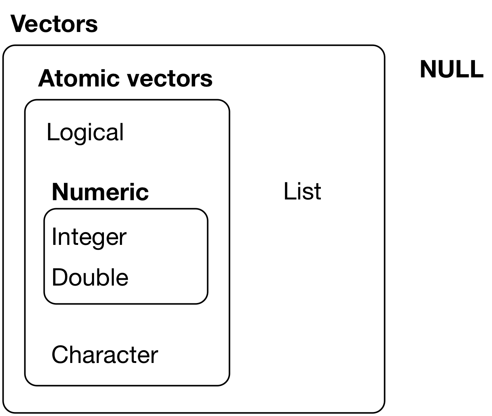

library(package = tidyverse)
library(package = haven)
library(package = labelled)
library(package = lubridate)Attributes and Class
1 Introduction
1.1 Libraries we will use
Load the packages we will use by running this code chunk:
If package not yet installed, then must install before you load. Install in “console” rather than .Rmd file:
- Generic syntax:
install.packages(pkgs = "package_name") - Install “tidyverse”:
install.packages(pkgs = "tidyverse")
Note: When we load package, name of package is not in quotes; but when we install package, name of package is in quotes:
install.packages(pkgs = "tidyverse")library(package = tidyverse)
1.2 Dataset we will use
Recall from Into the tidyverse lecture, we used the data set wwlist. This data set represents “prospects” purchased by Western Washington U.
- Essentially, universities identify/target “prospect” by buying student lists from College Board/ACT (e.g., $.50+ per prospect).
- Data universities purchase on students includes their contact info (e.g., address, email), academics (e.g., GPA, AP coursework), socioeconomic and demographic characteristics.
- Universities choose which prospective students’ information to purchase by filtering on criteria like their zip code, GPA, test score range, etc.
rm(list = ls()) # remove all objects
load(
file = url(
description = "https://github.com/anyone-can-cook/rclass1/raw/master/data/prospect_list/wwlist_merged.RData"
)
)2 Attributes and augmented vectors
2.1 Review data structures: Vectors
Two types of vectors:
- Atomic vectors
- Lists

2.1.1 Atomic vectors
An atomic vector is a collection of values
- Each value in an atomic vector is an element
- All elements within vector must have the same data type
(vec_x <- c(1,2,3)) # parentheses () assign and print object in one step[1] 1 2 3length(x = vec_x) # length = number of elements[1] 3typeof(x = vec_x) # numeric atomic vector, type=double[1] "double"str(object = vec_x) # investigate structure of object num [1:3] 1 2 3Can assign names to vector elements, creating a named atomic vector
(vec_x <- c(v1=1,v2=2,v3=3))v1 v2 v3
1 2 3 length(x = vec_x)[1] 3typeof(x = vec_x)[1] "double"str(object = vec_x) Named num [1:3] 1 2 3
- attr(*, "names")= chr [1:3] "v1" "v2" "v3"2.1.2 Lists
- Like atomic vectors, lists are objects that contain elements
- However, data type can differ across elements within a list
- E.g., an element of a list can be another list
list_x <- list(1,2,"apple")
typeof(x = list_x)[1] "list"length(x = list_x)[1] 3str(object = list_x)List of 3
$ : num 1
$ : num 2
$ : chr "apple"list_y <- list(1, c("apple", "orange"), list(1, 2))
length(x = list_y)[1] 3str(object = list_y)List of 3
$ : num 1
$ : chr [1:2] "apple" "orange"
$ :List of 2
..$ : num 1
..$ : num 2Like atomic vectors, elements within a list can be named, thereby creating a named list
# not named
str(object = list_y)List of 3
$ : num 1
$ : chr [1:2] "apple" "orange"
$ :List of 2
..$ : num 1
..$ : num 2# named
list_z <- list(v1=1, v2=c("apple", "orange"), v3=list(1, 2, 3))
str(object = list_z)List of 3
$ v1: num 1
$ v2: chr [1:2] "apple" "orange"
$ v3:List of 3
..$ : num 1
..$ : num 2
..$ : num 32.1.3 Data frames
A data frame is a list with the following characteristics:
- All the elements must be vectors with the same length
- Data frames are augmented lists because they have additional attributes
# a regular list
(list_x <- list(col_a = c(1,2,3), col_b = c(4,5,6), col_c = c(7,8,9)))$col_a
[1] 1 2 3
$col_b
[1] 4 5 6
$col_c
[1] 7 8 9typeof(x = list_x)[1] "list"attributes(x = list_x)$names
[1] "col_a" "col_b" "col_c"# a data frame
(df_x <- data.frame(col_a = c(1,2,3), col_b = c(4,5,6), col_c = c(7,8,9))) col_a col_b col_c
1 1 4 7
2 2 5 8
3 3 6 9typeof(x = df_x)[1] "list"attributes(x = df_x)$names
[1] "col_a" "col_b" "col_c"
$class
[1] "data.frame"
$row.names
[1] 1 2 32.2 Converting between types and data structures
The functions below convert an object to a different data type or data structure:
as.logical(): Convert tologicalas.numeric(): Convert tonumericas.integer(): Convert tointegeras.character(): Convert tocharacteras.list(): Convert to thelistdata structureas.data.frame(): Convert to thedata.framedata structure
When values of different types are combined in an atomic vector, R converts them to a common type that can accommodate all the values. In the examples below, the usual progression is logical → integer → double → character.
typeof(x = c(TRUE, 3L))[1] "integer"#> [1] "integer"
typeof(x = c(2L, 4.5))[1] "double"#> [1] "double"
typeof(x = c(2.5, "j"))[1] "character"#> [1] "character"Credit: R for Data Science, section on Coercion
Convert to logical using as.logical()
Character vector coerced to logical vector:
# Only "TRUE"/"FALSE", "True"/"False", "T"/"F", "true"/"false" are able to be coerced to logical type
as.logical(x = c("TRUE", "FALSE", "True", "False", "true", "false", "T", "F", "t", "f", "")) [1] TRUE FALSE TRUE FALSE TRUE FALSE TRUE FALSE NA NA NANumeric vector coerced to logical vector:
# 0 is treated as FALSE, while all other numeric values are treated as TRUE
as.logical(x = c(0, 0.0, 1, -1, 20, 5.5))[1] FALSE FALSE TRUE TRUE TRUE TRUEConvert to numeric using as.numeric()
Logical vector coerced to numeric vector:
# FALSE is mapped to 0 and TRUE is mapped to 1
as.numeric(x = c(FALSE, TRUE))[1] 0 1Character vector coerced to numeric vector:
# Strings containing numeric values can be coerced to numeric (leading 0's are dropped)
# All other characters become NA
as.numeric(x = c("0", "007", "2.5","2.6", "abc", "."))[1] 0.0 7.0 2.5 2.6 NA NAConvert to integer using as.integer()
Logical vector coerced to integer vector:
# FALSE is mapped to 0 and TRUE is mapped to 1
as.integer(x = c(FALSE, TRUE))[1] 0 1Character vector coerced to integer vector:
# Strings containing numeric values can be coerced to integer
# Leading 0's are dropped; decimals are truncated, not rounded
# All other characters become NA
as.integer(x = c("0", "007", "2.5","2.6", "abc", "."))[1] 0 7 2 2 NA NANumeric vector coerced to integer vector:
# All decimal places are truncated
as.integer(x = c(0, 2.1, 10.5, 8.8, -1.8))[1] 0 2 10 8 -1Convert to character using as.character()
Logical vector coerced to character vector:
as.character(x = c(FALSE, TRUE))[1] "FALSE" "TRUE" Numeric vector coerced to character vector:
as.character(x = c(-5, 0, 2.5))[1] "-5" "0" "2.5"Integer vector coerced to character vector:
as.character(x = c(-2L, 0L, 10L))[1] "-2" "0" "10"Convert to list using as.list()
Atomic vectors coerced to list:
# Logical vector
as.list(x = c(TRUE, FALSE))[[1]]
[1] TRUE
[[2]]
[1] FALSE# Character vector
as.list(x = c("a", "b", "c"))[[1]]
[1] "a"
[[2]]
[1] "b"
[[3]]
[1] "c"# Numeric vector
as.list(x = 1:3)[[1]]
[1] 1
[[2]]
[1] 2
[[3]]
[1] 3Convert to data.frame using as.data.frame()
Lists coerced to dataframe:
# Create a list
list_x <- list(A = c("x", "y", "z"), B = c(1, 2, 3))
str(object = list_x)List of 2
$ A: chr [1:3] "x" "y" "z"
$ B: num [1:3] 1 2 3# Convert to class `data.frame`
df_x <- as.data.frame(x = list_x, stringsAsFactors = F)
str(object = df_x)'data.frame': 3 obs. of 2 variables:
$ A: chr "x" "y" "z"
$ B: num 1 2 3Notice that the underlying type is still a list, but the object now has additional attributes that identify it as a data frame.
Example: Practical example of converting type
When working with data, it may be helpful to label values for certain variables. Data files often come with a code book that defines how values are coded. Let’s look at an example of labeling values and how converting data type may come into play.
We’ll look at the FIPS variable from the Integrated Postsecondary Education Data System (IPEDS) data. The state FIPS code is a numeric code that identifies a state. For example, 1 is the FIPS code for Alabama, 2 is the FIPS code for Alaska, etc. We’ll want to label each numeric value in the FIPS column with the corresponding state name.
# Library for labeling variables and values in a dataframe
library(package = labelled)
# Read in IPEDS data and codebook
ipeds_df <- read.csv(
file = 'https://raw.githubusercontent.com/cyouh95/recruiting-chapter/master/data/ipeds_hd2017.csv',
header = TRUE,
na.strings = c('', 'NA'),
stringsAsFactors = F
)
ipeds_values <- read.csv(
file = 'https://raw.githubusercontent.com/cyouh95/recruiting-chapter/master/data/ipeds_hd2017_values.csv',
header = TRUE,
na.strings = c('', 'NA'),
stringsAsFactors = F
)
# The codebook defines how variables are coded, such as STABBR, FIPS, and other variables
head(x = ipeds_values) varnumber varname codevalue valuelabel frequency percent
1 10016 STABBR AL Alabama 95 1.33
2 10016 STABBR AK Alaska 10 0.14
3 10016 STABBR AZ Arizona 137 1.92
4 10016 STABBR AR Arkansas 86 1.20
5 10016 STABBR CA California 729 10.19
6 10016 STABBR CO Colorado 118 1.65# Filter codebook for just the values for the FIPS variable
fips_values <- ipeds_values %>% filter(varname == 'FIPS') %>% select(varname, codevalue, valuelabel)
head(x = fips_values) varname codevalue valuelabel
1 FIPS 1 Alabama
2 FIPS 2 Alaska
3 FIPS 4 Arizona
4 FIPS 5 Arkansas
5 FIPS 6 California
6 FIPS 8 Colorado
When we read in the data from the CSV files, R automatically tries to determine the data type of each variable. As seen below, the FIPS column from the ipeds_df that we want to label is of type integer, while the codevalue column from the codebook is of type character (since not all values are numeric):
# Type of `FIPS` column
str(object = ipeds_df$FIPS) int [1:7153] 1 1 1 1 1 1 1 1 1 1 ...# Type of `codevalue` column
str(object = fips_values$codevalue) chr [1:59] "1" "2" "4" "5" "6" "8" "9" "10" "11" "12" "13" "15" "16" "17" ...
This discrepancy becomes a problem when we try to label the value using the labelled library:
# Error: `x` and `labels` must be same type
val_label(ipeds_df$FIPS, fips_values[1, 'codevalue']) <- fips_values[1, 'valuelabel']
To resolve this, we can use as.integer() to convert the codevalue from character type to integer before trying to label the value:
# This now works
val_label(ipeds_df$FIPS, as.integer(x = fips_values[1, 'codevalue'])) <- fips_values[1, 'valuelabel']
# Check value labels
val_labels(x = ipeds_df$FIPS)Alabama
1 # We can use as.integer() to convert the entire vector (ie. codevalue column) to integer
fips_values$codevalue <- as.integer(x = fips_values$codevalue)
# Type of `codevalue` column
str(object = fips_values$codevalue) int [1:59] 1 2 4 5 6 8 9 10 11 12 ...# Use loop to label the rest of the values
for (i in 1:nrow(x = fips_values)) {
val_label(ipeds_df$FIPS, fips_values[i, 'codevalue']) <- fips_values[i, 'valuelabel']
}
# Check value labels
val_labels(x = ipeds_df$FIPS) Alabama Alaska
1 2
Arizona Arkansas
4 5
California Colorado
6 8
Connecticut Delaware
9 10
District of Columbia Florida
11 12
Georgia Hawaii
13 15
Idaho Illinois
16 17
Indiana Iowa
18 19
Kansas Kentucky
20 21
Louisiana Maine
22 23
Maryland Massachusetts
24 25
Michigan Minnesota
26 27
Mississippi Missouri
28 29
Montana Nebraska
30 31
Nevada New Hampshire
32 33
New Jersey New Mexico
34 35
New York North Carolina
36 37
North Dakota Ohio
38 39
Oklahoma Oregon
40 41
Pennsylvania Rhode Island
42 44
South Carolina South Dakota
45 46
Tennessee Texas
47 48
Utah Vermont
49 50
Virginia Washington
51 53
West Virginia Wisconsin
54 55
Wyoming American Samoa
56 60
Federated States of Micronesia Guam
64 66
Marshall Islands Northern Marianas
68 69
Palau Puerto Rico
70 72
Virgin Islands
78 2.3 Atomic vectors, augmented vectors, and augmented lists
Atomic vectors [our focus so far]
- I think of atomic vectors as “just the data”
- Atomic vectors are the building blocks for augmented vectors
Augmented atomic vectors
- Augmented atomic vectors are atomic vectors with additional attributes attached
- Factors and dates are examples we will encounter later in this lecture
Augmented lists
- Augmented lists are lists with additional attributes attached
- A data frame is a common example of an augmented list
Attributes
- Attributes are additional “metadata” that can be attached to any object (e.g., vector or list)
- Metadata is information that describes the data. For example, a variable’s name, category labels, or how R should treat it.
Example: Variables of a dataset
- A data frame is a list
- Each element in the list is a variable, which consists of:
- Atomic vector (“just the data”)
- Any attributes we want to attach to each element/variable
- Variable name, an attribute of the data frame object
Other examples of attributes in R
- Value labels: Character labels (e.g., “Charter School”) attached to numeric values
- Object class: Specifies how object should be treated by object oriented programming language
Main takeaway:
- Attributes add metadata to R objects
- An augmented atomic vector or augmented list combines the underlying data structure with additional attributes
2.4 Attributes and functions to identify/modify attributes
Description of attributes from Grolemund and Wickham 20.6
- “Any vector can contain arbitrary additional metadata through its attributes”
- “You can think of attributes as named list of vectors that can be attached to any object”
Functions to identify and modify attributes
attributes(): gets or sets all attributes of an objectattr(): gets or sets one attribute of an object
2.4.1 Describe all attributes of an object
# pull up help file for the attributes() function
?attributesAttributes of a named atomic vector:
# create named atomic vector
(vec_x <- c(a = 1, b = 2, c = 3, d = 4))a b c d
1 2 3 4 attributes(x = vec_x)$names
[1] "a" "b" "c" "d"attributes(x = vec_x) %>% str() # a named list of vectors!List of 1
$ names: chr [1:4] "a" "b" "c" "d"# remove all attributes from the object
attributes(vec_x) <- NULL
vec_x[1] 1 2 3 4attributes(x = vec_x)NULLIn this example, removing all attributes only removes the vector’s names. Be careful when using this syntax with other objects: it can remove important information such as an object’s class or factor levels.
2.4.2 Attributes of a variable in a data frame
Accessing variable using [[]] subset operator
- Recall
object_name[["element_name"]]accesses contents of the element - If object is a data frame,
df_name[["var_name"]]accesses contents of variable- For simple vars like
firstgen, syntax yields an atomic vector (“just the data”)
- For simple vars like
- Shorthand syntax for
df_name[["var_name"]]isdf_name$var_name
str(object = wwlist[["firstgen"]]) chr [1:268396] NA "N" "N" "N" NA "N" "N" "Y" "Y" "N" "N" "N" "N" "N" "N" ...attributes(x = wwlist[["firstgen"]])NULLstr(object = wwlist$firstgen) # same same chr [1:268396] NA "N" "N" "N" NA "N" "N" "Y" "Y" "N" "N" "N" "N" "N" "N" ...attributes(x = wwlist$firstgen)NULLAccessing variable using [] subset operator
object_name["element_name"]creates object of same type asobject_name- If object is a data frame,
df_name["var_name"]returns a data frame containing just thevar_namecolumn
str(object = wwlist["firstgen"])
attributes(x = wwlist["firstgen"])2.4.3 Attributes of lists and data frames
Attributes of a named list:
list_x <- list(col_a = c(1,2,3), col_b = c(4,5,6))
str(object = list_x)List of 2
$ col_a: num [1:3] 1 2 3
$ col_b: num [1:3] 4 5 6attributes(x = list_x)$names
[1] "col_a" "col_b"Note that the names attribute is an attribute of the list, not an attribute of the elements within the list (which are atomic vectors)
list_x[['col_a']] # the element named 'col_a'[1] 1 2 3str(object = list_x[['col_a']]) # structure of the element named 'col_a' num [1:3] 1 2 3attributes(x = list_x[['col_a']]) # attributes of element named 'col_a'NULLAttributes of a data frame:
df_x <- data.frame(col_a = c(1,2,3), col_b = c(4,5,6))
str(object = df_x)'data.frame': 3 obs. of 2 variables:
$ col_a: num 1 2 3
$ col_b: num 4 5 6attributes(x = df_x)$names
[1] "col_a" "col_b"
$class
[1] "data.frame"
$row.names
[1] 1 2 3Note: attributes names, class and row.names are attributes of the data frame
- they are not attributes of the elements (variables) within the data frame, which are atomic vectors (i.e., just the data)
str(object = df_x[['col_a']]) # structure of the element named 'col_a' num [1:3] 1 2 3attributes(x = df_x[['col_a']]) # attributes of element named 'col_a'NULL2.4.4 attr() function to get or set specific attributes of an object
Syntax
- Get:
attr(x = obj_name, which = attribute_name, exact = FALSE) - Set:
attr(obj_name, attribute_name) <- value
Arguments
x: an object whose attributes are to be accessedwhich: a non-empty character string specifying which attribute is to be accessedexact(logical): shouldwhichbe matched exactly? default isexact = FALSEvalue: an object, new value of attribute, orNULLto remove attribute
Using attr() to get specific attribute of an object
vec_x <- c(a = 1, b= 2, c= 3, d = 4)
attributes(x = vec_x)$names
[1] "a" "b" "c" "d"attr(x = vec_x, which = "names", exact = FALSE)[1] "a" "b" "c" "d"attr(x = vec_x, which = "names")[1] "a" "b" "c" "d"attr(x = vec_x, which = "name") # we don't provide exact name of attribute[1] "a" "b" "c" "d"attr(x = vec_x, which = "name", exact = TRUE) # don't provide exact name of attributeNULLUsing attr() to set specific attribute of an object
(vec_x <- c(a = 1, b= 2, c= 3, d = 4))
attributes(x = vec_x) # see all attributes
attr(x = vec_x, which = "greeting") <- "Hi!" # create new attribute
attr(x = vec_x, which = "greeting") # see attribute
attr(vec_x, "farewell") <- "Bye!" # create attribute
attributes(x = vec_x) # see all attributes
# remember that the attribute object is just a named list of vectors
attributes(x = vec_x) %>% str() # each attribute is an element of a list;
# for each attribute, we have an attribute name and an atomic vector that contains the values of that attribute
attr(x = vec_x, which = "names") # see names attribute
attr(x = vec_x, which = "names") <- NULL # delete names attribute
attributes(x = vec_x) # see all attributes2.4.5 attr() function on data frames
Using wwlist, create data frame with three variables
wwlist_small <- wwlist[1:25, ] %>% select(hs_state,firstgen,med_inc_zip)
str(object = wwlist_small)tibble [25 × 3] (S3: tbl_df/tbl/data.frame)
$ hs_state : chr [1:25] "WA" "WA" "WA" "WA" ...
$ firstgen : chr [1:25] NA "N" "N" "N" ...
$ med_inc_zip: num [1:25] 92320 63653 88344 88408 82895 ...attributes(x = wwlist_small)$names
[1] "hs_state" "firstgen" "med_inc_zip"
$row.names
[1] 1 2 3 4 5 6 7 8 9 10 11 12 13 14 15 16 17 18 19 20 21 22 23 24 25
$class
[1] "tbl_df" "tbl" "data.frame"attributes(x = wwlist_small) %>% str()List of 3
$ names : chr [1:3] "hs_state" "firstgen" "med_inc_zip"
$ row.names: int [1:25] 1 2 3 4 5 6 7 8 9 10 ...
$ class : chr [1:3] "tbl_df" "tbl" "data.frame"Get/set attribute of a data frame
#get/examine names attribute
attr(x = wwlist_small, which = "names")[1] "hs_state" "firstgen" "med_inc_zip"str(object = attr(x = wwlist_small, which = "names")) # names attribute is character atomic vector, length=3 chr [1:3] "hs_state" "firstgen" "med_inc_zip"#add new attribute to data frame
attr(x = wwlist_small, which = "new_attribute") <- "contents of new attribute"
attributes(x = wwlist_small)$names
[1] "hs_state" "firstgen" "med_inc_zip"
$row.names
[1] 1 2 3 4 5 6 7 8 9 10 11 12 13 14 15 16 17 18 19 20 21 22 23 24 25
$class
[1] "tbl_df" "tbl" "data.frame"
$new_attribute
[1] "contents of new attribute"Get/set attribute of a variable in data frame (output omitted)
str(object = wwlist_small$med_inc_zip)
attributes(x = wwlist_small$med_inc_zip)
#create attribute for variable med_inc_zip
attr(wwlist_small$med_inc_zip, "inc attribute") <- "inc attribute contents"
#investigate attribute for variable med_inc_zip
attributes(x = wwlist_small$med_inc_zip)
str(object = wwlist_small$med_inc_zip)
attr(x = wwlist_small$med_inc_zip, which = "inc attribute")2.4.6 Why add attributes to data frame or variables of data frame?
Pedagogical reasons
- Important to know how you can apply
attributes()andattr()to data frames and to variables within data frames
Practical application: changing variable names from lower-case to upper-case or vice versa
There are other ways to change variable names, but here is one.
# first we investigate
attributes(x = wwlist_small)
#let's take a gander at the names attribute
attr(x = wwlist_small, which = "names")
attr(x = wwlist_small, which = "names") %>% str() # a character atomic vector of length 3
wwlist_small %>% length() # not coincidentally, the object wwlist_small also has length = 3
# without assignment, let's see if we can apply str_to_upper() function to names attribute
attr(x = wwlist_small, which = "names")
attr(x = wwlist_small, which = "names") %>% str_to_upper()
# now, let's change variable names to uppercase [PLEASE NEVER DO THIS!]
attr(x = wwlist_small, which = "names") <- attr(x = wwlist_small, which = "names") %>% str_to_upper()
attributes(wwlist_small)
wwlist_small %>% print(n=3)
# now, let sanity previal and change the names back to lowercase!
attr(x = wwlist_small, which = "names") # always inspect before we modify!
attr(x = wwlist_small, which = "names") <- attr(x = wwlist_small, which = "names") %>% str_to_lower()
attributes(wwlist_small) # thank goodness!
wwlist_small %>% print(n=3)Practical application: in interactive dashboards
- When creating “dashboard” you might want to add “tooltips”
- “Tooltip” is a message that appears when cursor is positioned over an icon
- The text in the tooltip is the contents of an attribute
- Example dashboard: LINK
2.4.7 Student exercise
Using
wwlist, create data frame of 30 observations with three variables:state,zip5,pop_total_zipReturn all attributes of this new data frame using
attributes(). Then, get thenamesattribute of the data frame usingattr().Add a new attribute to the data frame called
attribute_datawhose content is"new attribute of data". Then, return all attributes of the data frame as well as get the value of the newly createdattribute_data.Return the attributes of the variable
pop_total_zipin the data frame.Add a new attribute to the variable
pop_total_zipcalledattribute_variablewhose content is"new attribute of variable". Then, return all attributes of the variable as well as get the value of the newly createdattribute_variable.
Solutions to student exercise
# Part 1
wwlist_exercise <- wwlist[1:30, ] %>% select(state, zip5, pop_total_zip)
# Part 2
attributes(x = wwlist_exercise)
attr(x = wwlist_exercise, which = "names")
# Part 3
attr(x = wwlist_exercise, which = "attribute_data") <- "new attribute of data"
attributes(x = wwlist_exercise)
attr(x = wwlist_exercise, which = "attribute_data")
# Part 4
attributes(x = wwlist_exercise$pop_total_zip)
# Part 5
attr(wwlist_exercise$pop_total_zip, "attribute_variable") <- "new attribute of variable"
attributes(x = wwlist_exercise$pop_total_zip)
attr(x = wwlist_exercise$pop_total_zip, which = "attribute_variable")3 Object class
Every object in R has a class. An object’s type describes how its values are stored, while its class helps R interpret the object and determine how functions behave when applied to it.
- Common classes include
numeric,character,factor,Date, anddata.frame - An object’s class helps determine:
- Which functions are appropriate for that object
- How functions interpret, display, or transform the object
- Type and class are related, but they are not the same:
- Type describes how an object’s values are stored
- Class helps describe what the object represents and how R should treat it
- For many objects, class is stored in a
classattribute- For simple atomic vectors, R can infer the class from the object’s type even when there is no explicit
classattribute
- For simple atomic vectors, R can infer the class from the object’s type even when there is no explicit
- An object can also have more than one class
Use the class() function to identify an object’s class:
(vec_x <- c(a = 1, b= 2, c= 3, d = 4))a b c d
1 2 3 4 typeof(x = vec_x)[1] "double"class(x = vec_x)[1] "numeric"When I encounter a new object I often investigate object by applying typeof(), class(), and attributes() functions:
typeof(x = vec_x)[1] "double"class(x = vec_x)[1] "numeric"attributes(x = vec_x)$names
[1] "a" "b" "c" "d"3.1 Why is object class important?
When you apply a function to an object, the object’s type and class can both matter.
- Different functions use type and class in different ways:
- Date functions often rely on class to interpret stored values as dates
- String functions operate on objects with character type; when an object’s type is not character, its class can affect how it is converted to character
- Mathematical functions generally require a numeric or logical type, but an object’s class can change or prevent the calculation
- Some functions can work with more than one class but behave differently depending on the object’s class
- Some functions try to convert an object to an appropriate type or class before operating on it
Therefore, an object’s class can affect:
- Whether a function can work with the object
- How the function interprets the object
- What kind of result the function returns
3.1.1 Class and object-oriented programming
R is an object-oriented programming language.
In plain language, this means that functions can use the class of the object they receive to decide how to behave. The same function may do one thing when applied to an object of one class and something different when applied to an object of another class.
You do not need to learn how to create an object-oriented system for this course. The practical idea is:
- Objects have classes
- Functions can use those classes
- The same function can behave differently for different classes
Some R functions are generic functions. A generic function examines an object’s class and selects a class-specific version of the function to use.
Examples of generic functions include:
print(), which displays an objectsummary(), which produces a summary of an object
The class-specific version of a generic function is called a method. Method names often combine the generic function’s name and the class name.
For example, when you call print() on an object with class Date:
- You call the generic function
print() - R examines the object’s class and sees that it is
Date - R executes the
print.Date()method, which displays the stored values as calendar dates
When you call print() on an object with class data.frame, R instead executes the print.data.frame() method, which displays the object in rows and columns.
The same process occurs when you call summary():
- For an object with class
factor, R executessummary.factor(), which reports the number of observations in each factor level - For an object with class
data.frame, R executessummary.data.frame(), which produces an appropriate summary for each variable
You normally call the generic function, such as print() or summary(). R examines the object’s class and executes the appropriate method for you.
Many object classes already exist in R, and packages can provide additional classes.
- Examples include
numeric,character,factor,Date, anddata.frame - The
havenpackage provides classes for variables imported with value labels - In this course, we will work with classes that have already been created for us
3.1.2 Implicit versus explicit class
An object’s class can be implicit or explicit:
- An implicit class is inferred by R from the object’s underlying type
- Examples include ordinary numeric, integer, logical, and character atomic vectors
- An explicit class is stored in the object’s
classattribute- Examples include objects with class
Date,factor, anddata.frame
- Examples include objects with class
To see the difference, let’s compare two atomic vectors that contain the same underlying values and have the same underlying type.
# Create an ordinary numeric vector
vec_num <- c(19723, 19724, 19725)
# Create a Date vector using ymd() from lubridate
vec_date <- ymd(
c("2024-01-01", "2024-01-02", "2024-01-03")
)
vec_num[1] 19723 19724 19725vec_date[1] "2024-01-01" "2024-01-02" "2024-01-03"Both objects have type double:
typeof(x = vec_num)[1] "double"typeof(x = vec_date)[1] "double"However, the objects have different classes:
class(x = vec_num)[1] "numeric"class(x = vec_date)[1] "Date"Now inspect whether each object has a stored class attribute:
attr(x = vec_num, which = "class")NULLattr(x = vec_date, which = "class")[1] "Date"attributes(x = vec_num)NULLattributes(x = vec_date)$class
[1] "Date"vec_numhas an implicitnumericclass. R infers this class from the vector’sdoubletype, even though the object does not have a storedclassattribute.vec_datehas an explicitDateclass stored in itsclassattribute. This attribute tells R to interpret and display the underlying numbers as dates.
Main takeaway: good practice to use class() to identify an object’s class.
- using
attr()orattributes()function to identify class attribute will miss the implicit classes of simple atomic vectors.
3.1.3 Functions can depend on object type, class, or both
The examples below show that different functions use type and class in different ways.
Example: sum()—underlying type matters
The sum() function is designed to operate on logical, integer, double, or complex data.
Apply sum() to a logical vector:
vec_logical <- c(TRUE, FALSE, NA, TRUE)
typeof(x = vec_logical)[1] "logical"class(x = vec_logical)[1] "logical"sum(vec_logical, na.rm = TRUE)[1] 2For mathematical calculations, R treats TRUE as 1 and FALSE as 0. Therefore, this sum counts the two TRUE values.
A character vector cannot be summed because its underlying type is not appropriate for mathematical calculation.
vec_character <- c("1", "2", "3")
typeof(x = vec_character)
class(x = vec_character)
sum(vec_character)Class can change function behavior even when the underlying type is the same
Apply sum() to the ordinary numeric vector created in the previous section:
typeof(x = vec_num)[1] "double"class(x = vec_num)[1] "numeric"sum(vec_num)[1] 59172Now try to apply sum() to the Date vector:
typeof(x = vec_date)
class(x = vec_date)
sum(vec_date) # won't run because not an appropriate class vec_num and vec_date have the same underlying values and the same double type. However, vec_date has an explicit Date class, and adding calendar dates together is not a meaningful operation. Its class therefore prevents sum() from performing the calculation.
Example: year()—class supplies meaning
The year() function from lubridate is designed to extract the year from an object with a date or date-time class.
typeof(x = vec_date)[1] "double"class(x = vec_date)[1] "Date"year(x = vec_date)[1] 2024 2024 2024Although vec_date is stored as double values, its Date class tells year() to interpret those values as calendar dates.
Example: tolower()—a function can convert its input
The tolower() function operates on character data:
vec_character <- c("SEATTLE", "BELLINGHAM")
typeof(x = vec_character)[1] "character"class(x = vec_character)[1] "character"tolower(x = vec_character)[1] "seattle" "bellingham"tolower() can also accept some non-character objects by converting them to character first. An object’s class can affect how that conversion occurs.
Main takeaway:
- A function may rely primarily on an object’s type
- A function may rely primarily on an object’s class
- A function may use both type and class
- A function may convert an object before operating on it
4 Class == factor
Recoding variable ethn_code from data frame wwlist
Let’s first recode the ethn_code variable:
As introduced in the mutate lecture, recode_values() maps each existing value on the left-hand side of ~ to its new value on the right-hand side.
wwlist <- wwlist %>%
mutate(ethn_code =
recode_values(x = ethn_code,
"american indian or alaska native" ~ "nativeam",
"asian or native hawaiian or other pacific islander" ~ "api",
"black or african american" ~ "black",
"cuban" ~ "latinx",
"mexican/mexican american" ~ "latinx",
"not reported" ~ "not_reported",
"other-2 or more" ~ "multirace",
"other spanish/hispanic" ~ "latinx",
"puerto rican" ~ "latinx",
"white" ~ "white",
default = ethn_code
)
)
str(object = wwlist$ethn_code)
wwlist %>% count(ethn_code)4.1 Factors
Factors are an object class used to represent categorical data (e.g., marital status)
- A factor is an augmented atomic vector built from an integer vector with two important attributes:
- A
levelsattribute that associates the underlying integers with category labels - An explicit
class = "factor"attribute that tells R to treat the object as a factor
- A
Categorical variables can be stored as character or factor variables:
- Character variables are often convenient while cleaning and recoding data
- Factor variables are especially useful when category order, display order, reference categories, or modeling behavior matters
- So far in the course I have made all categorical variables character variables because we have not introduced factors yet
Create factor version of character variable ethn_code using base R factor() function:
str(object = wwlist$ethn_code) chr [1:268396] "multirace" "white" "white" "multirace" "white" "multirace" ...class(x = wwlist$ethn_code)[1] "character"# create factor variable using factor() within mutate()
wwlist <- wwlist %>% mutate(ethn_code_fac = factor(x = ethn_code))
#wwlist$ethn_code_fac <- factor(x = wwlist$ethn_code) # base r approach
str(object = wwlist$ethn_code) chr [1:268396] "multirace" "white" "white" "multirace" "white" "multirace" ...str(object = wwlist$ethn_code_fac) Factor w/ 7 levels "api","black",..: 4 7 7 4 7 4 4 4 4 7 ...Character variable ethn_code:
typeof(x = wwlist$ethn_code)[1] "character"class(x = wwlist$ethn_code)[1] "character"attributes(x = wwlist$ethn_code)NULLstr(object = wwlist$ethn_code) chr [1:268396] "multirace" "white" "white" "multirace" "white" "multirace" ...Factor variable ethn_code_fac:
typeof(x = wwlist$ethn_code_fac)[1] "integer"class(x = wwlist$ethn_code_fac)[1] "factor"attributes(x = wwlist$ethn_code_fac)$levels
[1] "api" "black" "latinx" "multirace" "nativeam"
[6] "not_reported" "white"
$class
[1] "factor"str(object = wwlist$ethn_code_fac) Factor w/ 7 levels "api","black",..: 4 7 7 4 7 4 4 4 4 7 ...4.2 Working with factor variables
Main things to note about variable ethn_code_fac
- type = integer
- class = factor, stored in the explicit
classattribute - The underlying data are integers, while the levels attribute supplies the category labels that are displayed:
# Print first few obs of ethn_code_fac
wwlist$ethn_code_fac[1:5][1] multirace white white multirace white
Levels: api black latinx multirace nativeam not_reported white# Print count for each category in ethn_code_fac
wwlist %>% count(ethn_code_fac)# A tibble: 7 × 2
ethn_code_fac n
<fct> <int>
1 api 2385
2 black 563
3 latinx 9245
4 multirace 90584
5 nativeam 202
6 not_reported 5737
7 white 159680Apply as.integer() to display the underlying integer codes of the factor variable
- This is useful for understanding how factors are stored internally
- Do not use these integer codes to identify categories in an analysis because the codes can change if the factor levels change or are reordered
Investigate as.integer() function:
typeof(x = wwlist$ethn_code_fac)[1] "integer"class(x = wwlist$ethn_code_fac)[1] "factor"typeof(x = as.integer(x = wwlist$ethn_code_fac))[1] "integer"class(x = as.integer(x = wwlist$ethn_code_fac))[1] "integer"Display underlying integer values of variable ethn_code_fac:
wwlist %>% count(as.integer(x = ethn_code_fac))# A tibble: 7 × 2
`as.integer(x = ethn_code_fac)` n
<int> <int>
1 1 2385
2 2 563
3 3 9245
4 4 90584
5 5 202
6 6 5737
7 7 159680Refer to categories of a factor (e.g., when filtering observations) using values of the levels attribute rather than the underlying integer codes
- Values of levels attribute for
ethn_code_fac(output omitted)
attributes(x = wwlist$ethn_code_fac)Example: Count the number of prospects in wwlist who identify as “white”
# referring to an underlying integer code; this doesn't work
wwlist %>% filter(ethn_code_fac==7) %>% count() # A tibble: 1 × 1
n
<int>
1 0# referring to a value of the levels attribute; this works
wwlist %>% filter(ethn_code_fac=="white") %>% count()# A tibble: 1 × 1
n
<int>
1 159680Although applying as.integer() first would make the code below run, do not use this approach to identify categories. The code 7 describes the current position of "white" in the levels, and that position can change.
# not recommended: relies on the current ordering of the factor levels
attributes(x = wwlist$ethn_code_fac)
wwlist %>% filter(as.integer(x = ethn_code_fac)==7) %>% count()4.3 How to identify the variable values associated with factor levels
Create a factor version of the character variable psat_range
wwlist %>% count(psat_range)
wwlist <- wwlist %>% mutate(psat_range_fac = factor(x = psat_range))
wwlist %>% count(psat_range_fac)
attributes(x = wwlist$psat_range_fac)Investigate values associated with factor levels using levels() and nlevels()
levels(x = wwlist$psat_range_fac) #starts at 1
nlevels(x = wwlist$psat_range_fac) #7 levels total
levels(x = wwlist$psat_range_fac)[1:3] #prints levels 1-3Once values associated with factor levels are known, filter using the level label rather than its underlying integer code:
wwlist %>% filter(psat_range_fac=="1270-1520") %>% count()# A tibble: 1 × 1
n
<int>
1 83484.3.1 Student exercise working with factors
- After running the code below, use
typeof(),class(),str(), andattributes()functions to check the new variablereceive_year
- Create a factor variable from the input variable
receive_yearand name itreceive_year_fac
- Run the same functions (
typeof(),class(), etc.) from the first question using the new variable you created
- Get a count of
receive_year_fac. (hint: you could also run this in the console to see values associated with each factor)
Run this code to create a year variable from the input variable receive_date:
# wwlist %>% glimpse()
library(package = lubridate) # load library if you haven't already
wwlist <- wwlist %>%
mutate(receive_year = year(x = receive_date)) # create year variable with lubridate
# Check variable
wwlist %>%
count(receive_year)
wwlist %>%
group_by(receive_year) %>%
count(receive_date)
Solutions to student exercise working with factors %>%
- After running the code below, use
typeof(),class(),str(), andattributes()functions to check the new variablereceive_year
typeof(x = wwlist$receive_year)[1] "double"class(x = wwlist$receive_year)[1] "numeric"str(object = wwlist$receive_year) num [1:268396] 2016 2016 2016 2016 2016 ...attributes(x = wwlist$receive_year)NULL- Create a factor variable from the input variable
receive_yearand name itreceive_year_fac
# create factor var; tidyverse approach
wwlist <- wwlist %>%
mutate(receive_year_fac = factor(x = receive_year))- Run the same functions (
typeof(),class(), etc.) from the first question using the new variable you created
typeof(x = wwlist$receive_year_fac)[1] "integer"class(x = wwlist$receive_year_fac)[1] "factor"str(object = wwlist$receive_year_fac) Factor w/ 3 levels "2016","2017",..: 1 1 1 1 1 1 1 1 1 1 ...attributes(x = wwlist$receive_year_fac)$levels
[1] "2016" "2017" "2018"
$class
[1] "factor"- Get a count of
receive_year_fac. (hint: you could also run this in the console to see values associated with each factor)
wwlist %>%
count(receive_year_fac)# A tibble: 3 × 2
receive_year_fac n
<fct> <int>
1 2016 89637
2 2017 89816
3 2018 889435 Haven-labelled vectors
5.1 Data we will use to introduce haven-labelled vectors
High school longitudinal surveys from National Center for Education Statistics (NCES)
- Follow U.S. students from high school through college, labor market
We will be working with High School Longitudinal Study of 2009 (HSLS:09)
- Follows 9th graders from 2009
- Data collection waves
- Base Year (2009)
- First Follow-up (2012)
- 2013 Update (2013)
- High School Transcripts (2013-2014)
- Second Follow-up (2016)
5.2 Using haven package to read SAS/SPSS/Stata datasets into R
haven, which is part of tidyverse, “enables R to read and write various data formats” from the following statistical packages:
- SAS
- SPSS
- Stata
If you haven’t installed haven run the following code in your console.
- Generic syntax:
install.packages(pkgs = "package_name") - Install “haven”:
install.packages(pkgs = "haven")
Make sure to load haven (e.g., library(package = haven))
When using haven to read data, resulting R objects have these characteristics:
- Data frames are tibbles, Tidyverse’s preferred class of data frames
- Variables with “value labels” are imported as haven-labelled vectors
class()generally returns a class vector beginning with"haven_labelled", followed by other classes that describe the object- This is an example of one object having more than one class
- Haven-labelled vectors preserve the original values and metadata imported from another statistical package
- Helpful description of haven-labelled vectors HERE
- Dates and times converted to R date/time classes
- Character vectors not converted to factors
Use read_dta() function from haven package to import Stata dataset into R
hsls <- read_dta(file = "https://github.com/ozanj/rclass/raw/master/data/hsls/hsls_stu_small.dta")Must run this code chunk; changes the variable names in the in-memory hsls object from uppercase to lowercase
- This does not permanently change the variable names in the source Stata file
names(x = hsls)
names(hsls) <- tolower(x = names(x = hsls)) # convert names to lowercase
names(x = hsls) # names now lowercase
str(object = hsls) # ughInvestigate variable s3classes from data frame hsls
- Identifies whether respondent taking postsecondary classes as of 11/1/2013
typeof(x = hsls$s3classes)
class(x = hsls$s3classes)
str(object = hsls$s3classes)Investigate attributes of s3classes
attributes(x = hsls$s3classes) # all attributes
#specific attributes: using syntax: attr(x = obj_name, which = attribute_name, exact = FALSE)
attr(x = hsls$s3classes, which = "label") # label attribute
attr(x = hsls$s3classes, which = "labels") # labels attribute5.3 What is a haven-labelled vector?
Variable labels are descriptions attached to a specific variable (e.g., “marital status”).
Value labels are descriptions attached to specific stored values of a variable, e.g.:
- Var value
1attached to value label “married”,2=“single”,3=“divorced”
Haven-labelled vectors preserve variables with value labels imported from SAS, SPSS, or Stata.
- The
havenpackage provides thehaven_labelledclass - A haven-labelled vector can have underlying type integer, double, or character
- The object can have multiple classes, so
class()may return more than one value - To see
value labelsassociated with each value:attr(x = df_name$var_name, which = "labels")- E.g.,
attr(x = hsls$s3classes, which = "labels")
Investigate the attributes of hsls$s3classes
typeof(x = hsls$s3classes)
class(x = hsls$s3classes)
str(object = hsls$s3classes)
attributes(x = hsls$s3classes)Use attr(x = obj_name, which = "attribute_name") to refer to each attribute
attr(x = hsls$s3classes, which = "label")
attr(x = hsls$s3classes, which = "format.stata")
attr(x = hsls$s3classes, which = "class")
attr(x = hsls$s3classes, which = "labels")5.4 labelled package
Purpose of the labelled package is to work with data imported from SPSS, Stata, or SAS using the haven package
labelledcontains functions for working with variable labels, value labels, and defined missing values stored as metadata- More info on the
labelledpackage: LINK
Functions in labelled package
5.5 Get variable and value labels
Get variable labels using var_label()
hsls %>% select(s3classes) %>% var_label()$s3classes
[1] "S3 B01A Taking postsecondary classes as of Nov 1 2013"Get value labels using val_labels()
hsls %>% select(s3classes) %>% val_labels()$s3classes
Missing
-9
Unit non-response
-8
Item legitimate skip/NA
-7
Component not applicable
-6
Item not administered: abbreviated interview
-4
Yes
1
No
2
Don't know
3 5.6 Working with haven-labelled data
Create frequency tables with haven-labelled variables using count()
- Current tibble output shows the stored variable values together with their value labels
hsls %>% count(s3classes)# A tibble: 5 × 2
s3classes n
<dbl+lbl> <int>
1 -9 [Missing] 59
2 -8 [Unit non-response] 4945
3 1 [Yes] 13477
4 2 [No] 3401
5 3 [Don't know] 1621To use the value labels themselves as the displayed category values, add %>% as_factor() to the pipe
as_factor()is a function fromhaventhat converts a haven-labelled object to a factor- Earlier, we used base R
factor()for ordinary character or numeric vectors. Here, we usehaven::as_factor()because the starting variable is haven-labelled; its value labels become the factor levels.
hsls %>% count(s3classes) %>% as_factor()# A tibble: 5 × 2
s3classes n
<fct> <int>
1 Missing 59
2 Unit non-response 4945
3 Yes 13477
4 No 3401
5 Don't know 1621To isolate values of haven-labelled variables in filter():
- Refer to variable value, not the value label
Important note about missing-value codes:
- A label such as
"Unit non-response"or"Missing"does not automatically make the stored value missing in R - Values such as
-8and-9remain ordinary numbers unless we explicitly exclude them or convert them toNA - If we do not handle these codes, R may include them in calculations such as means and regression models
Task
- How many observations in var
s3classesassociated with “Unit non-response” - How many observations in var
s3classesassociated with “Yes”
General steps to follow:
- Investigate object
- Use
filter()to isolate desired observations
Investigate object
class(x = hsls$s3classes)
hsls %>% select(s3classes) %>% var_label() #show variable label
hsls %>% select(s3classes) %>% val_labels() #show value label
hsls %>% count(s3classes) # stored values shown with their value labels
hsls %>% count(s3classes) %>% as_factor() # labels converted to factor valuesFilter specific values
hsls %>% filter(s3classes==-8) %>% count() # -8 = unit non-response
hsls %>% filter(s3classes==1) %>% count() # 1 = yes5.7 Set variable and value labels
Set variable labels using var_label() or set_variable_labels()
# Set one variable label
var_label(df_name$var_name) <- 'variable label'
# Set multiple variable labels
df_name <- df_name %>%
set_variable_labels(
var_name_1 = 'variable label 1',
var_name_2 = 'variable label 2',
var_name_3 = 'variable label 3'
)Set value labels using val_label() or set_value_labels()
# Set one value label
val_label(df_name$var_name, 'variable_value') <- 'value_label'
# Set multiple value labels
df_name <- df_name %>%
set_value_labels(
var_name_1 = c(
'value_label_1' = 'variable_value_1',
'value_label_2' = 'variable_value_2'
),
var_name_2 = c(
'value_label_3' = 'variable_value_3',
'value_label_4' = 'variable_value_4'
)
)5.7.1 Create example data frame
df_x <- tribble(
~id, ~edu, ~sch,
#--|--|----
1, 2, 2,
2, 1, 1,
3, 3, 2,
4, 4, 2,
5, 1, 2
)
df_x# A tibble: 5 × 3
id edu sch
<dbl> <dbl> <dbl>
1 1 2 2
2 2 1 1
3 3 3 2
4 4 4 2
5 5 1 2str(object = df_x)tibble [5 × 3] (S3: tbl_df/tbl/data.frame)
$ id : num [1:5] 1 2 3 4 5
$ edu: num [1:5] 2 1 3 4 1
$ sch: num [1:5] 2 1 2 2 25.7.2 Set variable labels
Use set_variable_labels() or var_label() to manually set variable labels
str(object = df_x$sch) num [1:5] 2 1 2 2 2var_label(x = df_x$sch)NULL# Using set_variable_labels()
df_x <- df_x %>%
set_variable_labels(
id = "Unique identification number",
edu = "Education level"
)
# Using var_label()
var_label(df_x$sch) <- 'Type of school attending'
str(object = df_x$sch) num [1:5] 2 1 2 2 2
- attr(*, "label")= chr "Type of school attending"var_label(x = df_x$sch)[1] "Type of school attending"5.7.3 Set value labels
Use set_value_labels() or val_label() to manually set value labels
val_labels(x = df_x$sch)NULL# Using set_value_labels()
df_x <- df_x %>%
set_value_labels(
edu = c('High School' = 1,
'AA degree' = 2,
'BA degree' = 3,
'MA or higher' = 4),
sch = c('Private' = 1))
# Using val_label()
val_label(df_x$sch, 2) <- 'Public'
str(object = df_x$sch) dbl+lbl [1:5] 2, 1, 2, 2, 2
@ labels: Named num [1:2] 1 2
..- attr(*, "names")= chr [1:2] "Private" "Public"
@ label : chr "Type of school attending"val_labels(x = df_x$sch)Private Public
1 2 5.7.4 View the set variable and value labels
# View variable and value labels using attributes()
attributes(x = df_x$sch)$labels
Private Public
1 2
$label
[1] "Type of school attending"
$class
[1] "haven_labelled" "vctrs_vctr" "double" # View variable label
var_label(x = df_x$sch)[1] "Type of school attending"attr(x = df_x$sch, which = 'label')[1] "Type of school attending"# View value labels
val_labels(x = df_x$sch)Private Public
1 2 attr(x = df_x$sch, which = 'labels')Private Public
1 2 5.7.5 labelled student exercise
- Get variable and value labels of the variable
s3hsin thehslsdata frame - Get a count of the variable
s3hsshowing the values and the value labels (hint: useas_factor()) - Get a count of the rows whose value for
s3hsis associated with “Missing” (hint: usefilter()) - Get a count of the rows whose value for
s3hsis associated with “Missing” or “Unit non-response” - Add variable label for
pop_asian_zip&pop_asian_statein data framewwlist - Add value labels for
ethn_codein data framewwlist
labelled student exercise solutions
- Get variable and value labels of the variable
s3hsin thehslsdata frame
hsls %>%
select(s3hs) %>%
var_label() $s3hs
[1] "S3 B01F Attending high school or homeschool as of Nov 1 2013"hsls %>%
select(s3hs) %>%
val_labels()$s3hs
Missing
-9
Unit non-response
-8
Item legitimate skip/NA
-7
Component not applicable
-6
Item not administered: abbreviated interview
-4
Yes
1
No
2
Don't know
3 - Get a count of the variable
s3hsshowing the values and the value labels (hint: useas_factor())
hsls %>%
count(s3hs) # A tibble: 6 × 2
s3hs n
<dbl+lbl> <int>
1 -9 [Missing] 22
2 -8 [Unit non-response] 4945
3 -7 [Item legitimate skip/NA] 16770
4 1 [Yes] 624
5 2 [No] 985
6 3 [Don't know] 157hsls %>%
count(s3hs) %>%
as_factor() # A tibble: 6 × 2
s3hs n
<fct> <int>
1 Missing 22
2 Unit non-response 4945
3 Item legitimate skip/NA 16770
4 Yes 624
5 No 985
6 Don't know 157- Get a count of the rows whose value for
s3hsis associated with “Missing” (hint: usefilter())
hsls %>%
filter(s3hs== -9) %>%
count()# A tibble: 1 × 1
n
<int>
1 22- Get a count of the rows whose value for
s3hsis associated with “Missing” or “Unit non-response”
hsls %>%
filter(s3hs== -9 | s3hs== -8) %>%
count()# A tibble: 1 × 1
n
<int>
1 4967- Add variable label for
pop_asian_zip&pop_asian_statein data framewwlist
# variable labels
wwlist %>% select(pop_asian_zip, pop_asian_state) %>% var_label()$pop_asian_zip
NULL
$pop_asian_state
NULL# set variable labels
wwlist <- wwlist %>%
set_variable_labels(
pop_asian_zip = "total asian population in zip",
pop_asian_state ="total asian population in state"
)
# attribute of variable
attributes(x = wwlist$pop_asian_zip)$label
[1] "total asian population in zip"attributes(x = wwlist$pop_asian_state)$label
[1] "total asian population in state"- Add value labels for
ethn_codein data framewwlist
# count
wwlist %>% count(ethn_code)
# value labels
wwlist %>% select(ethn_code) %>% val_labels
# set value labels to ethn_code variable
wwlist <- wwlist %>%
set_value_labels(
ethn_code = c("asian or native hawaiian or other pacific islander" = "api",
"black or african american" = "black",
"cuban or mexican/mexican american or other spanish/hispanic or puerto rican" = "latinx",
"other-2 or more" = "multirace",
"american indian or alaska native" = "nativeam",
"not reported" = "not_reported",
"white" = "white"
)
)6 Comparing haven-labelled vectors to factors
| Haven-labelled vector | Factor | |
|---|---|---|
| underlying type | integer, double, or character | integer |
| attribute containing categories | labels |
levels |
| primary purpose | preserve imported values and metadata | represent categorical data in R |
| refer to categories using | stored variable values | level labels |
Which conversion function should I use?
The function we use depends on the kind of object we start with and what we want to create.
| Starting object | What we want | Preferred function |
|---|---|---|
| Ordinary character or numeric vector | Factor | factor() |
| Haven-labelled variable | Factor that uses its value labels | haven::as_factor() |
| Factor | Character vector containing its level labels | as.character() |
| Character vector containing numbers | Numeric vector | as.numeric() |
| Factor | See its internal integer storage codes | as.integer() for inspection only—not analysis |
The final row is for looking “under the hood.” When filtering or analyzing a factor, refer to its level labels rather than its internal integer codes.
So should you work with haven-labelled vectors or factors?
- They serve different purposes, so this is not simply a right-or-wrong choice
- Personally, I prefer
factorclass when analyzing categorical variables- Easier to run analysis (see section below)
- Haven-labelled vectors
- Feels more suited to working with survey data variables, where there are usually several different values that represent different kinds of “missing” values.
- You can use both! A useful workflow is to retain haven-labelled variables while inspecting and cleaning imported data, then deliberately convert categorical variables to factors for analysis.
6.0.1 Why convert categorical haven-labelled variables to factors for analysis
When a haven-labelled numeric variable represents categories (e.g., marital status: single, married, divorced, etc.), convert it to a factor before using it as a categorical variable in a model.
To demonstrate a quick example, let’s load data from ELS. We will use this data set later in the graphing and ggplot lecture, so don’t worry about understanding it now.
Say we are interested in the relationship between having an internship or co-op job (X) (in 2005-2006) on subsequent earnings (Y) (in 2011) after controlling for standardized reading test score (as a measure for high school achievement), sex, and race/ethnicity.
- We have two linear models below, the first using numeric haven-labelled variables and the second using factor variables.
Before fitting either model, we exclude the documented survey codes that mean missing and rows with an actual NA for the internship variable. This is a separate step from converting categorical variables to factors.
df_els_model <- df_els_stu_allobs %>%
filter(
f2enroll0506 == 1,
!f3ern2011 %in% c(-8, -4), # -8 and -4 are missing-value codes
bytxrstd != -8, # -8 is a missing-value code
!is.na(x = f2intern0506)
)
# Convert the categorical predictors only after excluding missing-value codes
df_els_model_fac <- df_els_model %>%
mutate(
across(
.cols = c(f2intern0506, f1sex, f1race_v2),
.fns = as_factor
)
)Linear model lm() treating haven-labelled categorical variables as numeric codes
$label
[1] "F1 sex-composite"
$format.stata
[1] "%8.0g"
$class
[1] "haven_labelled" "vctrs_vctr" "double"
$labels
Male Female
1 2 $labels
white api black latinx native multi
1 2 3 4 5 6
$class
[1] "haven_labelled" "vctrs_vctr" "double"
$label
[1] "categorical measure of race based on variable f1race"intern_mod1 <- lm(formula = f3ern2011 ~ f2intern0506 + bytxrstd + f1sex + f1race_v2, data = df_els_model)
summary(object = intern_mod1)
Call:
lm(formula = f3ern2011 ~ f2intern0506 + bytxrstd + f1sex + f1race_v2,
data = df_els_model)
Residuals:
Min 1Q Median 3Q Max
-40385 -16139 -2848 11274 229059
Coefficients:
Estimate Std. Error t value Pr(>|t|)
(Intercept) 25890.21 1955.68 13.238 < 2e-16 ***
f2intern0506 6092.37 1111.71 5.480 4.37e-08 ***
bytxrstd 262.55 30.27 8.673 < 2e-16 ***
f1sex -6019.49 541.93 -11.108 < 2e-16 ***
f1race_v2 -1078.54 201.21 -5.360 8.53e-08 ***
---
Signif. codes: 0 '***' 0.001 '**' 0.01 '*' 0.05 '.' 0.1 ' ' 1
Residual standard error: 24430 on 8245 degrees of freedom
Multiple R-squared: 0.03243, Adjusted R-squared: 0.03196
F-statistic: 69.09 on 4 and 8245 DF, p-value: < 2.2e-16Linear model lm() after converting the categorical predictors to factors
$levels
[1] "Male" "Female"
$class
[1] "factor"
$label
[1] "F1 sex-composite"$levels
[1] "white" "api" "black" "latinx" "native" "multi"
$class
[1] "factor"
$label
[1] "categorical measure of race based on variable f1race"intern_mod2 <- lm(formula = f3ern2011 ~ f2intern0506 + bytxrstd + f1sex + f1race_v2, data = df_els_model_fac)
summary(object = intern_mod2)
Call:
lm(formula = f3ern2011 ~ f2intern0506 + bytxrstd + f1sex + f1race_v2,
data = df_els_model_fac)
Residuals:
Min 1Q Median 3Q Max
-40514 -16072 -2888 11218 226346
Coefficients:
Estimate Std. Error t value Pr(>|t|)
(Intercept) 20589.82 1794.21 11.476 < 2e-16 ***
f2intern0506yes 6097.71 1111.52 5.486 4.24e-08 ***
bytxrstd 234.19 31.08 7.535 5.39e-14 ***
f1sexFemale -5952.19 541.81 -10.986 < 2e-16 ***
f1race_v2api -1259.75 866.13 -1.454 0.1459
f1race_v2black -4671.78 920.19 -5.077 3.92e-07 ***
f1race_v2latinx -4405.54 895.12 -4.922 8.74e-07 ***
f1race_v2native -9410.73 3882.96 -2.424 0.0154 *
f1race_v2multi -2007.62 1362.22 -1.474 0.1406
---
Signif. codes: 0 '***' 0.001 '**' 0.01 '*' 0.05 '.' 0.1 ' ' 1
Residual standard error: 24410 on 8241 degrees of freedom
Multiple R-squared: 0.0345, Adjusted R-squared: 0.03356
F-statistic: 36.81 on 8 and 8241 DF, p-value: < 2.2e-16Why does this matter?
In intern_mod1, lm() sees the stored numeric codes and treats them as quantitative values. The value labels do not tell lm() that the numbers represent categories. For a variable with several unordered categories, such as race, this incorrectly treats a one-unit increase in the numeric code as meaningful.
In intern_mod2, the factor class tells lm() to treat the values as categories. R uses one category as the reference category and estimates coefficients comparing the other categories with that reference. A factor with k categories therefore contributes k - 1 category coefficients rather than one quantitative slope.
6.1 Converting haven-labelled categorical variables to factors
The as_factor() function from haven converts haven-labelled variables to factors
- Can be used for descriptive statistics
hsls %>% select(s3classes) %>% count(s3classes)
hsls %>% select(s3classes) %>% count(s3classes) %>% as_factor()- Can create an object with some or all haven-labelled variables converted to factors
Important: Before converting an entire data frame, inspect the variables and decide which ones genuinely represent categories. Some variables may carry value labels only for special codes and should remain numeric.
as_factor()does not convert values labelled"Missing"or"Unit non-response"toNA; it converts those labels to ordinary factor levels- Handle missing-value codes separately, either before or after converting the variable to a factor
For this teaching example, we convert all haven-labelled variables:
hsls_f <- as_factor(x = hsls, only_labelled = TRUE)Let’s examine this object
glimpse(x = hsls_f)
hsls_f %>% select(s3classes,s3clglvl) %>% str()
typeof(x = hsls_f$s3classes)
class(x = hsls_f$s3classes)
attributes(x = hsls_f$s3classes)
hsls_f %>% select(s3classes) %>% var_label()
hsls_f %>% select(s3classes) %>% val_labels()6.2 Working with factor data
Showing factor levels associated with a factor variable
hsls_f %>% count(s3classes)# A tibble: 5 × 2
s3classes n
<fct> <int>
1 Missing 59
2 Unit non-response 4945
3 Yes 13477
4 No 3401
5 Don't know 1621Showing the underlying integer codes associated with a factor variable
- This is useful for understanding storage, but use the factor level labels—not these codes—to identify categories
hsls_f %>% count(as.integer(x = s3classes))# A tibble: 5 × 2
`as.integer(x = s3classes)` n
<int> <int>
1 1 59
2 2 4945
3 6 13477
4 7 3401
5 8 1621When sub-setting observations (e.g., filtering), refer to the level attribute, not the underlying variable integer value.
hsls_f %>% filter(s3classes=="Yes") %>% count(s3classes)# A tibble: 1 × 2
s3classes n
<fct> <int>
1 Yes 134777 Appendix: Creating factor variables
7.1 Create factors [from string variables]
To create a factor variable from string variable:
- Create a character vector containing underlying data
- Create a vector containing valid levels
- Attach levels to the data using the
factor()function
# Underlying data: months my fam is born
vec_x <- c("Jan", "Aug", "Apr", "Mar")
# Create vector with valid levels
month_levels <- c("Jan", "Feb", "Mar", "Apr", "May", "Jun",
"Jul", "Aug", "Sep", "Oct", "Nov", "Dec")
# Attach levels to data
vec_y <- factor(x = vec_x, levels = month_levels)Note how attributes differ:
str(object = vec_x) chr [1:4] "Jan" "Aug" "Apr" "Mar"str(object = vec_y) Factor w/ 12 levels "Jan","Feb","Mar",..: 1 8 4 3Sorting also differs:
sort(x = vec_x)[1] "Apr" "Aug" "Jan" "Mar"sort(x = vec_y)[1] Jan Mar Apr Aug
Levels: Jan Feb Mar Apr May Jun Jul Aug Sep Oct Nov DecLet’s create a character version of variable hs_state and then turn it into a factor:
#wwlist %>%
# count(hs_state)
# Subset obs to West Coast states
wwlist_temp <- wwlist %>%
filter(hs_state %in% c("CA", "OR", "WA"))
# Create character version of high school state for West Coast states only
wwlist_temp$hs_state_char <- as.character(x = wwlist_temp$hs_state)
# Investigate character variable
str(object = wwlist_temp$hs_state_char)
table(wwlist_temp$hs_state_char)
# Create new variable that assigns levels
wwlist_temp$hs_state_fac <- factor(x = wwlist_temp$hs_state_char, levels = c("CA","OR","WA"))
str(object = wwlist_temp$hs_state_fac)
attributes(x = wwlist_temp$hs_state_fac)
#wwlist_temp %>%
# count(hs_state_fac)
rm(wwlist_temp)How the levels argument works when underlying data is character:
- Matches value of underlying data to value of the level attribute
- Converts underlying data to integer, with level attribute attached
See Chapter 15 of Wickham for more on factors (e.g., modifying factor order, modifying factor levels)
7.2 Creating factors [from integer vectors]
Factors are integer vectors with a levels attribute and an explicit class = "factor" attribute. To create a factor from integer values:
- Create a vector for the underlying data
- Specify the valid underlying values using the
levelsargument - Specify the category labels corresponding to those values using the
labelsargument - Create the factor using the
factor()function
vec_x <- c(1,1,1,0,1,1,0) # A vector of data
vec_y <- c("zero","one") # A vector of labels
# Explicitly attach each label to its corresponding value
vec_z <- factor(
x = vec_x,
levels = c(0, 1),
labels = vec_y
)
vec_z[1] one one one zero one one zero
Levels: zero onestr(object = vec_z) Factor w/ 2 levels "zero","one": 2 2 2 1 2 2 1Note: The order of levels and labels defines the mapping: value 0 receives label "zero", and value 1 receives label "one". Stating both arguments explicitly prevents the mapping from depending on which values happen to appear in the data.
Let’s turn an integer variable into a factor variable in the wwlist data frame
Create integer version of receive_year:
#typeof(x = wwlist_temp$receive_year)
wwlist$receive_year_int <- as.integer(x = wwlist$receive_year)
str(object = wwlist$receive_year_int) int [1:268396] 2016 2016 2016 2016 2016 2016 2016 2016 2016 2016 ...typeof(x = wwlist$receive_year_int)[1] "integer"Assign levels to values of integer variable:
wwlist$receive_year_fac <- factor(x = wwlist$receive_year_int,
levels = c(2016, 2017, 2018),
labels = c("Twenty-sixteen","Twenty-seventeen","Twenty-eighteen"))
str(object = wwlist$receive_year_fac)
str(object = wwlist$receive_year)
#Check variable
wwlist %>%
count(receive_year_fac)
wwlist %>%
count(receive_year)